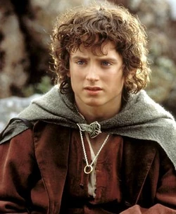
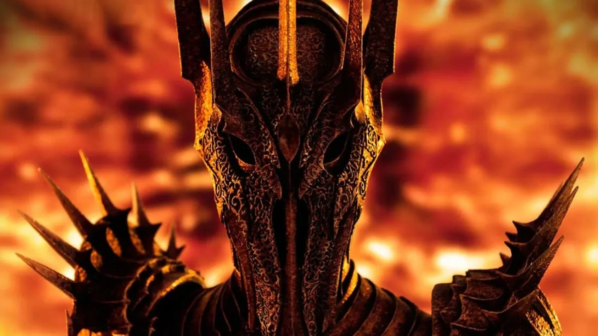

Personajes
"El verdadero valor consiste en saber no cuándo quitar una vida,
sino cuándo perdonarla". - Gandalf.
Tarjetas de personajes

Frodo Bolsón
El sobrino de Bilbo Bolsón que se convirtio en el portador del Anillo Único.

Gandalf
El mago gris, Mithrandir entre los elfos, Tharkún para los enanos.

Sauron
El señor oscuro, espíritu Maia corrompido por Morgoth, originalmente un ser de gran habilidad y conocimiento.

Aragorn
HIjo de Arathotn, heredero de Insildur, señor de los Dunedain, heredero del trono de Gondor.